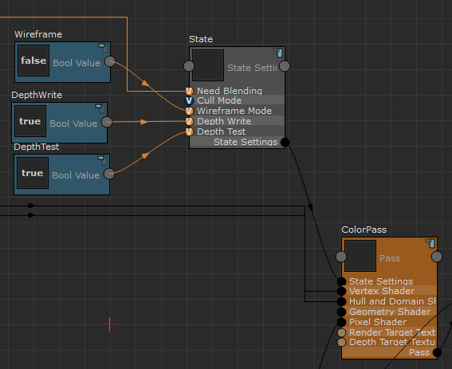

若要创建“状态设置”(State Settings)节点，请从 ShaderFX 菜单栏中选择“设置 > 切换高级模式”(Settings > Toggle Advanced Mode)以启用高级模式，然后选择“硬件着色器节点 > 核心 > 状态设置”(Hw Shader Nodes > Core > State Settings)。此节点可用于指定各种过程或绘制调用的渲染状态。例如，可以设置是否应该启用“线框模式”(Wireframe Mode)、是否应该禁用“深度写入”(Depth Write)等。若要设置这些状态，请将“布尔值”(Bool Value)节点连接到每个输入端口。
有关如何使用此节点的示例，请创建一个对象并为其指定 ShaderfxShader 节点。在视口中按 6 键可更改为纹理模式。
- 单击“打开 ShaderFX”(Open ShaderFX)打开 ShaderFX 编辑器。
默认情况下，将创建并显示三个节点：“颜色”(Color)、TraditionalGameSurfaceShader 和“材质”(Material)。
- 选择“设置 > 切换高级模式”(Settings > Toggle Advanced Mode)以进入高级模式。
- 单击“材质”(Material)节点上的“组”(Group)
 图标以查看其节点网络。
图标以查看其节点网络。
- 单击 ColorPass 节点上的“组”(Group)
图标以查看其节点网络。
“状态设置”(State Settings)节点用作 ColorPass 节点的输入。
三个“布尔值”(Bool Value)节点分别为“线框模式”(Wireframe Mode)、“深度写入”(Depth Write)和“深度测试”(Depth Test)端口提供输入值。
例如，如果现在将“线框模式”(Wireframe Mode)的输入值从 false 更改为 true，将在视口中以线框模式绘制对象。